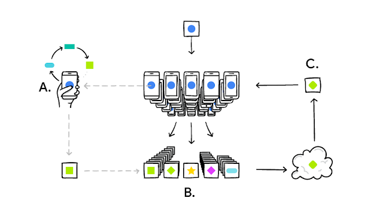
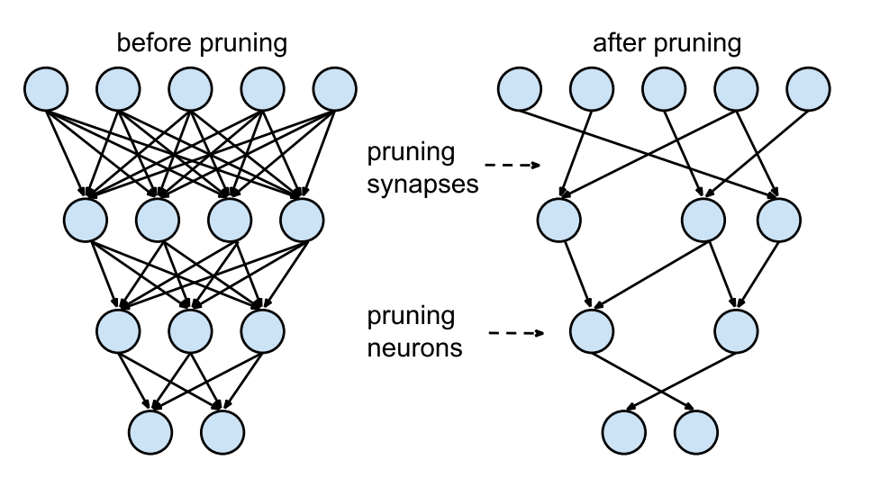
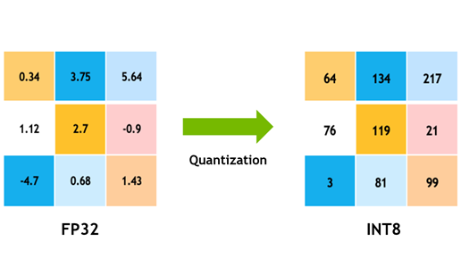
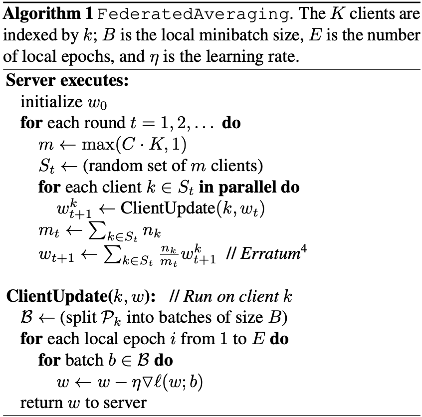
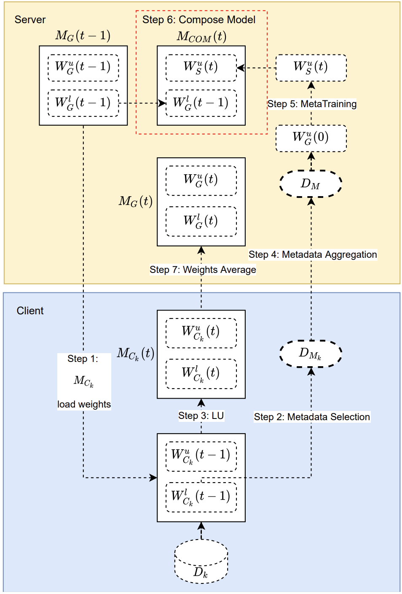
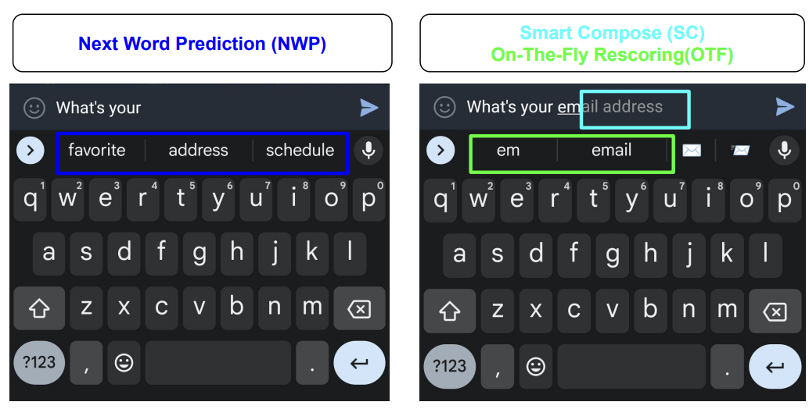
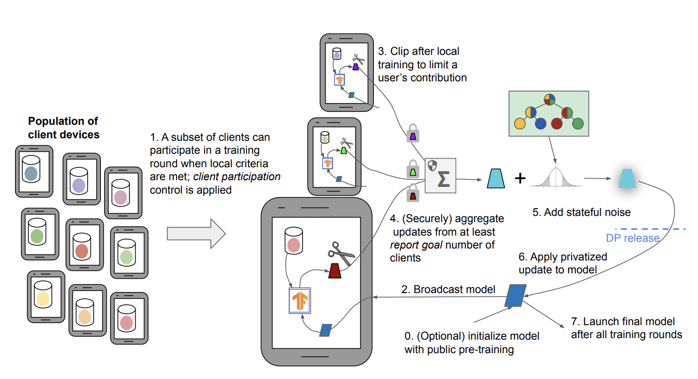
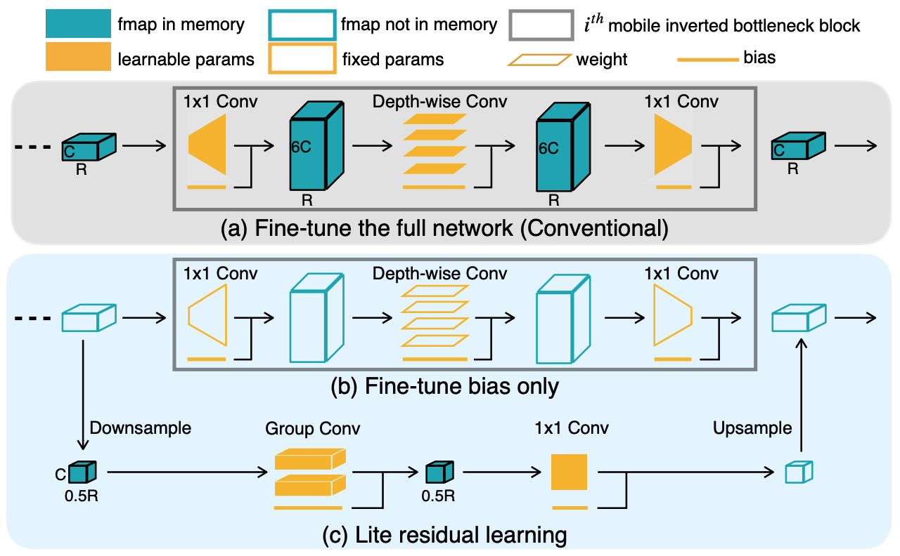

13 On-Device Learning
On-device Learning represents a significant innovation for embedded and edge IoT devices, enabling models to train and update directly on small local devices. This contrasts with traditional methods where models are trained on expansive cloud computing resources before deployment. With On-Device Learning, devices like smart speakers, wearables, and industrial sensors can refine models in real-time based on local data, without needing to transmit data externally. For example, a voice-enabled smart speaker could learn and adapt to its owner’s speech patterns and vocabulary right on the device. But there is no such thing as free lunch, therefore in this chapter, we will discuss both the benefits and the limitations of on-device learning.
Understand on-device learning and how it differs from cloud-based training
Recognize the benefits and limitations of on-device learning
Examine strategies to adapt models through complexity reduction, optimization, and data compression
Understand related concepts like federated learning and transfer learning
Analyze the security implications of on-device learning and mitigation strategies
13.1 Introduction
On-device Learning refers to the process of training ML models directly on the device where they are deployed, as opposed to traditional methods where models are trained on powerful servers and then deployed to devices. This method is particularly relevant to TinyML, where ML systems are integrated into tiny, resource-constrained devices.
An example of On-Device Learning can be seen in a smart thermostat that adapts to user behavior over time. Initially, the thermostat may have a generic model that understands basic patterns of usage. However, as it is exposed to more data, such as the times the user is home or away, preferred temperatures, and external weather conditions, the thermostat can refine its model directly on the device to provide a personalized experience for the user. This is all done without the need to send data back to a central server for processing.
Another example is in predictive text on smartphones. As users type, the phone learns from the user’s language patterns and suggests words or phrases that are likely to be used next. This learning happens directly on the device, and the model updates in real-time as more data is collected. A widely used real-world example of on-device learning is Gboard. On an Android phone, Gboard learns from typing and dictation patterns to enhance the experience for all users.

13.2 Advantages and Limitations
On-Device Learning provides a number of advantages over traditional cloud-based ML. By keeping data and models on the device, it eliminates the need for costly data transmission and addresses privacy concerns. This allows for more personalized, responsive experiences as the model can adapt in real-time to user behavior.
However, On-Device Learning also comes with tradeoffs. The limited compute resources on consumer devices can make it challenging to run complex models locally. Datasets are also more restricted since they consist only of user-generated data from a single device. Additionally, updating models requires pushing out new versions rather than seamless cloud updates.
On-Device Learning opens up new capabilities by enabling offline AI while maintaining user privacy. But it requires carefully managing model and data complexity within the constraints of consumer devices. Finding the right balance between localization and cloud offloading is key to delivering optimized on-device experiences.
13.2.1 Benefits
Privacy and Data Security
One of the significant advantages of on-device learning is the enhanced privacy and security of user data. For instance, consider a smartwatch that monitors sensitive health metrics such as heart rate and blood pressure. By processing data and adapting models directly on the device, the biometric data remains localized, circumventing the need to transmit raw data to cloud servers where it could be susceptible to breaches.
Server breaches are far from rare, with millions of records compromised annually. For example, the 2017 Equifax breach exposed the personal data of 147 million people. By keeping data on the device, the risk of such exposures is drastically minimized. On-device learning acts as a safeguard against unauthorized access from various threats, including malicious actors, insider threats, and accidental exposure, by eliminating reliance on centralized cloud storage.
Regulations like the Health Insurance Portability and Accountability Act (HIPAA) and the General Data Protection Regulation (GDPR) mandate stringent data privacy requirements that on-device learning adeptly addresses. By ensuring data remains localized and is not transferred to other systems, on-device learning facilitates compliance with these regulations.
On-device learning is not just beneficial for individual users; it has significant implications for organizations and sectors dealing with highly sensitive data. For instance, within the military, on-device learning empowers frontline systems to adapt models and function independently of connections to central servers that could potentially be compromised. By localizing data processing and learning, critical and sensitive information is staunchly protected. However, this comes with the trade-off that individual devices take on more value and may incentivize theft or destruction, as they become sole carriers of specialized AI models. Care must be taken to secure devices themselves when transitioning to on-device learning.
It is also important in preserving the privacy, security, and regulatory compliance of personal and sensitive data. Training and operating models locally, as opposed to in the cloud, substantially augments privacy measures, ensuring that user data is safeguarded from potential threats.
However, this is not entirely intuitive because on-device learning could instead open systems up to new privacy attacks. With valuable data summaries and model updates permanently stored on individual devices, it may be much harder to physically and digitally protect them compared to a large computing cluster. While on-device learning reduces the amount of data compromised in any one breach, it could also introduce new dangers by dispersing sensitive information across many decentralized endpoints. Careful security practices are still essential for on-device systems.
Regulatory Compliance
On-device learning helps address major privacy regulations like (GDPR) and CCPA. These regulations require data localization, restricting cross-border data transfers to approved countries with adequate controls. GDPR also mandates privacy by design and consent requirements for data collection. By keeping data processing and model training localized on-device, sensitive user data is not transferred across borders. This avoids major compliance headaches for organizations.
For example, a healthcare provider monitoring patient vitals with wearables would have to ensure cross-border data transfers comply with HIPAA and GDPR if using the cloud. Determining which country’s laws apply and securing approvals for international data flows introduces legal and engineering burdens. With on-device learning, no data leaves the device, simplifying compliance. The time and resources spent on compliance are reduced significantly.
Industries like healthcare, finance and government with highly regulated data can benefit greatly from on-device learning. By localizing data and learning, regulatory requirements on privacy and data sovereignty are more easily met. On-device solutions provide an efficient way to build compliant AI applications.
Major privacy regulations impose restrictions on cross-border data movement that on-device learning inherently addresses through localized processing. This reduces the compliance burden for organizations working with regulated data.
Reduced Bandwidth, Costs, and Increased Efficiency
One major advantage of on-device learning is the significant reduction in bandwidth usage and associated cloud infrastructure costs. By keeping data localized for model training, rather than transmitting raw data to the cloud, on-device learning can result in substantial savings in bandwidth. For instance, a network of cameras analyzing video footage can achieve up to significant reductions in data transfer by training models on-device rather than streaming all video footage to the cloud for processing.
This reduction in data transmission not only saves bandwidth but also translates to lower costs for servers, networking, and data storage in the cloud. Large organizations, which might spend millions on cloud infrastructure to train models on device data, can experience dramatic cost reductions through on-device learning. In the era of Generative AI, where costs have been escalating significantly, finding ways to keep expenses down has become increasingly important.
Furthermore, the energy and environmental costs associated with running large server farms are also diminished. Data centers are known to consume vast amounts of energy, contributing to greenhouse gas emissions. By reducing the need for extensive cloud-based infrastructure, on-device learning plays a part in mitigating the environmental impact of data processing (Wu et al. 2022).
Specifically for endpoint applications, on-device learning minimizes the number of network API calls needed to run inference through a cloud provider. For applications with millions of users, the cumulative costs associated with bandwidth and API calls can quickly escalate. In contrast, performing training and inferences locally is considerably more efficient and cost-effective. On-device learning has been shown to reduce training memory requirements, drastically improve memory efficiency, and reduce up to 20% in per-iteration latency under the state-of-the-art optimizations (Dhar et al. 2021).
Another key benefit of on-device learning is the potential for IoT devices to continuously adapt their ML model to new data for continuous, lifelong learning. On-device models can quickly become outdated as user behavior, data patterns, and preferences change. Continuous learning enables the model to efficiently adapt to new data and improvements and maintain high model performance over time.
13.2.2 Limitations
While traditional cloud-based ML systems have access to nearly endless computing resources, on-device learning is often restricted by the limitations in computational and storage power of the edge device that the model is trained on. By definition, an edge device is a device with restrained computing, memory, and energy resources, that cannot be easily increased or decreased. Thus, the reliance on edge devices can restrict the complexity, efficiency, and size of on-device ML models.
Compute resources
Traditional cloud-based ML systems utilize large servers with multiple high-end GPUs or TPUs that provide nearly endless computational power and memory. For example, services like Amazon Web Services (AWS) EC2 allow configuring clusters of GPU instances for massively parallel training.
In contrast, on-device learning is restricted by the hardware limitations of the edge device it runs on. Edge devices refer to endpoints like smartphones, embedded electronics, and IoT devices. By definition, these devices have highly restrained computing, memory, and energy resources compared to the cloud.
For example, a typical smartphone or Raspberry Pi may only have a few CPU cores, a few GB of RAM, and a small battery. Even more resource-constrained are TinyML microcontroller devices such as the Arduino Nano BLE Sense. The resources are fixed on these devices and can’t easily be increased on demand like scaling cloud infrastructure. This reliance on edge devices directly restricts the complexity, efficiency, and size of models that can be deployed for on-device training:
- Complexity: Limits on memory, computing, and power restrict model architecture design, constraining the number of layers and parameters.
- Efficiency: Models must be heavily optimized through methods like quantization and pruning to run faster and consume less energy.
- Size: Actual model files must be compressed as much as possible to fit within the storage limitations of edge devices.
Thus, while the cloud offers endless scalability, on-device learning must operate within the tight resource constraints of endpoint hardware. This requires careful co-design of streamlined models, training methods, and optimizations tailored specifically for edge devices.
Dataset Size, Accuracy, and Generalization
In addition to limited computing resources, on-device learning is also constrained in terms of the dataset available for training models.
In the cloud, models are trained on massive, diverse datasets like ImageNet or Common Crawl. For example, ImageNet contains over 14 million images carefully categorized across thousands of classes.
On-device learning instead relies on smaller, decentralized data silos unique to each device. A smartphone camera roll may contain only thousands of photos centered around a user’s specific interests and environments.
This decentralized data leads to a lack of IID (independent and identically distributed) data. For instance, two friends may take many photos of the same places and objects, meaning their data distributions are highly correlated rather than independent.
Reasons data may be non-IID in on-device settings:
- User heterogeneity: different users have different interests and environments.
- Device differences: sensors, regions, and demographics affect data.
- Temporal effects: time of day, seasonal impacts on data.
The effectiveness of ML relies heavily on large, diverse training data. With small, localized datasets, on-device models may fail to generalize across different user populations and environments.
For example, a disease detection model trained only on images from a single hospital would not generalize well to other patient demographics. Without extensive, diverse medical images, the model’s real-world performance would suffer.
Thus, while cloud-based learning leverages massive datasets, on-device learning relies on much smaller, decentralized data silos unique to each user.
The limited data and optimizations required for on-device learning can negatively impact model accuracy and generalization: * Small datasets increase overfitting risk. For example, a fruit classifier trained on 100 images risks overfitting compared to one trained on 1 million diverse images. * Noisy user-generated data reduces quality. Sensor noise or improper data labeling by non-experts may degrade training. * Optimizations like pruning and quantization trade off accuracy for efficiency. An 8-bit quantized model runs faster but less accurately than a 32-bit model.
So while cloud models achieve high accuracy with massive datasets and no constraints, on-device models can struggle to generalize. Some studies show that on-device training matches cloud accuracy on select tasks. However, performance on real-world workloads requires further study (Lin et al. 2022).
For instance, a cloud model can accurately detect pneumonia in chest X-rays from thousands of hospitals. However, an on-device model trained only on a small local patient population may fail to generalize.
Unreliable accuracy limits the real-world applicability of on-device learning for mission-critical uses like disease diagnosis or self-driving vehicles.
On-device training is also slower than the cloud due to limited resources. Even if each iteration is faster, the overall training process takes longer.
For example, a real-time robotics application may require model updates within milliseconds. On-device training on small embedded hardware may take seconds or minutes per update - too slow for real-time use.
Accuracy, generalization, and speed challenges pose hurdles to adopting on-device learning for real-world production systems, especially when reliability and low latency are critical.
13.3 On-device Adaptation
In an ML task, resource consumption mainly comes from three sources:
- The ML model itself;
- The optimization process during model learning
- Storing and processing the dataset used for learning.
Correspondingly, there are three approaches to adapting existing ML algorithms onto resource-constrained devices:
- Reducing the complexity of the ML model
- Modifying optimizations to reduce training resource requirements
- Creating new storage-efficient data representations
In the following section, we will review these on-device learning adaptation methods. More details on model optimizations can be found in the Model Optimizations chapter.
13.3.1 Reducing Model Complexity
In this section, we will briefly discuss ways to reduce model complexity to adapt ML models on-device. For details of reducing model complexity, please refer to the Model Optimization Chapter.
Traditional ML Algorithms
Due to the compute and memory limitations of edge devices, select traditional ML algorithms are great candidates for on-device learning applications due to their lightweight nature. Some example algorithms with low resource footprints include Naive Bayes Classifier, Support Vector Machines (SVMs), Linear Regression, Logistic Regression, and select Decision Tree algorithms.
With some refinements, these classical ML algorithms can be adapted to specific hardware architectures and perform simple tasks, and their low performance requirements make it easy to integrate continuous learning even on edge devices.
Pruning
Pruning is a technique used to reduce the size and complexity of an ML model to improve their efficiency and generalization performance. This is beneficial for training models on edge devices, where we want to minimize the resource usage while maintaining competitive accuracy.
The primary goal of pruning is to remove parts of the model that do not contribute significantly to its predictive power while retaining the most informative aspects. In the context of decision trees, pruning involves removing some of the branches (subtrees) from the tree, leading to a smaller and simpler tree. In the context of DNN, pruning is used to reduce the number of neurons (units) or connections in the network.

{kind=link}
Reducing Complexity of Deep Learning Models
Traditional cloud-based DNN frameworks have too much memory overhead to be used on-device. For example, deep learning systems like PyTorch and TensorFlow require hundreds of megabytes of memory overhead when training models such as MobilenetV2, and the overhead scales as the number of training parameters increases.
Traditional cloud-based DNN frameworks have too much memory overhead to be used on-device. For example, deep learning systems like PyTorch and TensorFlow require hundreds of megabytes of memory overhead when training models such as MobilenetV2-w0.35, and the overhead scales as the number of training parameters increases.
Current research for lightweight DNNs mostly explore CNN architectures. Several bare-metal frameworks designed for running Neural Network on MCUs by keeping computational overhead and memory footprint low also exist. Some examples include MNN, TVM, and TensorFlow Lite. However, they can only perform inference during forward pass and lack support for back-propagation. While these models are designed for edge deployment, their reduction in model weights and architectural connections led to reduced resource requirements for continuous learning.
The tradeoff between performance and model support is clear when adapting the most popular DNN systems. How do we adapt existing DNN models to resource-constrained settings while maintaining support for back-propagation and continuous learning? Latest research suggests algorithm and system codesign techniques that help reduce the resource consumption of ML training on edge devices. Utilizing techniques such as quantization-aware scaling (QAS), sparse updates, and other cutting edge techniques, on-device learning is possible on embedded systems with a few hundred kilobytes of RAM without additional memory while maintaining high accuracy.
13.3.2 Modifying Optimization Processes
Choosing the right optimization strategy is important for DNN training on-device, since this allows for the finding of a good local minimum. This optimization strategy must also consider limited memory and power since training occurs on-device.
Quantization-Aware Scaling
Quantization is a common method for reducing the memory footprint of DNN training. Although this could introduce new errors, these errors can be mitigated by designing a model to characterize this statistical error. For example, models could use stochastic rounding or introduce the quantization error into the gradient updates.
A specific algorithmic technique is Quantization-Aware Scaling (QAS), used to improve the performance of neural networks on low-precision hardware, such as edge devices and mobile devices or TinyML systems, by adjusting the scale factors during the quantization process.
As you recall from the Optimizations chapter, quantization is the process of mapping a continuous range of values to a discrete set of values. In the context of neural networks, quantization often involves reducing the precision of the weights and activations from 32-bit floating point to lower-precision formats such as 8-bit integers. This reduction in precision can significantly reduce the computational cost and memory footprint of the model, making it suitable for deployment on low-precision hardware.

{kind=link}
However, the quantization process can also introduce quantization errors that can degrade the performance of the model. Quantization-aware scaling is a technique that aims to minimize these errors by adjusting the scale factors used in the quantization process.
The QAS process involves two main steps:
- Quantization-aware training: In this step, the neural network is trained with quantization in mind, using simulated quantization to mimic the effects of quantization during the forward and backward passes. This allows the model to learn to compensate for the quantization errors and improve its performance on low-precision hardware. Refer to QAT section in model optimizations for details.

- Quantization and scaling: After training, the model is quantized to low-precision format, and the scale factors are adjusted to minimize the quantization errors. The scale factors are chosen based on the distribution of the weights and activations in the model, and are adjusted to ensure that the quantized values are within the range of the low-precision format.
QAS is used to overcome the difficulties of optimizing models on tiny devices. Without needing hyperparamter tuning. QAS automatically scales tensor gradients with various bit-precisions. This in turn stabilizes the training process and matches the accuracy of floating-point precision.
Sparse Updates
Although QAS enables optimizing a quantized model, it uses a large amount of memory that is unrealistic for on-device training. So spare update is used to reduce the memory footprint of full backward computation. Instead of pruning weights for inference, sparse update prunes the gradient during backwards propagation to update the model sparsely. In other words, sparse update skips computing gradients of less important layers and sub-tensors.
However, determining the optimal sparse update scheme given a constraining memory budget can be challenging due to the large search space. For example, the MCUNet model has 43 convolutional layers and a search space of approximately 1030. One technique to address this issue is contribution analysis. Contribution analysis measures the accuracy improvement from biases (updating the last few biases compared to only updating the classifier) and weights (updating the weight of one extra layer compared to only having a bias update). By trying to maximize these improvements, contribution analysis automatically derives an optimal sparse update scheme for enabling on-device training.
Layer-Wise Training
Other methods besides quantization can help optimize routines. One such method is layer-wise training. A significant memory consumer of DNN training is the end-to-end back-propagation. This requires all intermediate feature maps to be stored so the model can calculate gradients. An alternative to this approach that reduces the memory footprint of DNN training is sequential layer-by-layer training (T. Chen et al. 2016). Instead of training end-to-end, training a single layer at a time helps avoid having to store intermediate feature maps.
Trading Computation for Memory
The strategy of trading computation for memory involves releasing some of the memory being used to store intermediate results. Instead, these results can be recomputed as needed. Reducing memory in exchange for more computation is shown to reduce the memory footprint of DNN training to fit into almost any budget while also minimizing computational cost (Gruslys et al. 2016).
13.3.3 Developing New Data Representations
The dimensionality and volume of the training data can significantly impact on-device adaptation. So another technique for adapting models onto resource-cosntrained devices is to represent datasets in a more efficient way.
Data Compression
The goal of data compression is to reach high accuracies while limiting the amount of training data. One method to achieve this is prioritizing sample complexity: the amount of training data required for the algorithm to reach a target accuracy (Dhar et al. 2021).
Other more common methods of data compression focus on reducing the dimensionality and the volume of the training data. For example, an approach could take advantage of matrix sparsity to reduce the memory footprint of storing training data. Training data can be transformed into a lower-dimensional embedding and factorized into a dictionary matrix multiplied by a block-sparse coefficient matrix (Darvish Rouhani, Mirhoseini, and Koushanfar 2017). Another example could involve representing words from a large language training dataset in a more compressed vector format (Li et al. 2016).
13.4 Transfer Learning
Transfer learning is a ML technique where a model developed for a particular task is reused as the starting point for a model on a second task. In the context of on-device AI, transfer learning allows us to leverage pre-trained models that have already learned useful representations from large datasets, and fine-tune them for specific tasks using smaller datasets directly on the device. This can significantly reduce the computational resources and time required for training models from scratch.
Let’s take the example of a smart sensor application that uses on-device AI to recognize objects in images captured by the device. Traditionally, this would require sending the image data to a server, where a large neural network model processes the data and sends back the results. With on-device AI, the model is stored and runs directly on-device, eliminating the need to send data to a server.
If we want to customize the model for the on-device characteristics, training a neural network model from scratch on the device would however be impractical due to the limited computational resources and battery life. This is where transfer learning comes in. Instead of training a model from scratch, we can take a pre-trained model, such as a convolutional neural network (CNN) or a transformer network that has been trained on a large dataset of images, and fine-tune it for our specific object recognition task. This fine-tuning can be done directly on the device using a smaller dataset of images relevant to the task. By leveraging the pre-trained model, we can reduce the computational resources and time required for training, while still achieving high accuracy for the object recognition task.
Transfer learning plays an important role in making on-device AI practical by allowing us to leverage pre-trained models and fine-tune them for specific tasks, thereby reducing the computational resources and time required for training. The combination of on-device AI and transfer learning opens up new possibilities for AI applications that are more privacy-conscious and responsive to user needs.
Transfer learning has revolutionized the way models are developed and deployed, both in the cloud and at the edge. Transfer learning is being used in the real world. One such example is the use of transfer learning to develop AI models that can detect and diagnose diseases from medical images, such as X-rays, MRI scans, and CT scans. For example, researchers at Stanford University developed a transfer learning model that can detect cancer in skin images with an accuracy of 97% (Esteva et al. 2017). This model was pre-trained on 1.28 million images to classify a broad range of objects, then specialized for cancer detection by training on a dermatologist-curated dataset of skin images.
Implementation in production scenarios can be broadly categorized into two stages: pre-deployment and post-deployment.

13.4.1 Pre-Deployment Specialization
In the pre-deployment stage, transfer learning acts as a catalyst to expedite the development process. Here’s how it typically works: Imagine we are creating a system to recognize different breeds of dogs. Rather than starting from scratch, we can utilize a pre-trained model that has already mastered the broader task of recognizing animals in images.
This pre-trained model serves as a solid foundation and contains a wealth of knowledge acquired from extensive data. We then fine-tune this model using a specialized dataset containing images of various dog breeds. This fine-tuning process tailors the model to our specific need – identifying dog breeds with precision. Once fine-tuned and validated to meet performance criteria, this specialized model is then ready for deployment.
Here’s how it works in practice:
- Start with a Pre-Trained Model: Begin by selecting a model that has already been trained on a comprehensive dataset, usually related to a general task. This model serves as the foundation for the task at hand.
- Fine-Tuning: The pre-trained model is then fine-tuned on a smaller, more specialized dataset that is specific to the desired task. This step allows the model to adapt and specialize its knowledge to the specific requirements of the application.
- Validation: After fine-tuning, the model is validated to ensure it meets the performance criteria for the specialized task.
- Deployment: Once validated, the specialized model is then deployed into the production environment.
This method significantly reduces the time and computational resources required to train a model from scratch (Pan and Yang 2010). By adopting transfer learning, embedded systems can achieve high accuracy on specialized tasks without the need to gather extensive data or expend significant computational resources on training from the ground up.
13.4.2 Post-Deployment Adaptation
Deployment to a device need not mark the culmination of a ML model’s educational trajectory. With the advent of transfer learning, we open the doors to the deployment of adaptive ML models to real-world scenarios, catering to the personalized needs of users.
Consider a real-world application where a parent wishes to identify their child in a collection of images from a school event on their smartphone. In this scenario, the parent is faced with the challenge of locating their child amidst images of many other children. Here, transfer learning can be employed to fine-tune an embedded system’s model to this unique and specialized task. Initially, the system might use a generic model trained to recognize faces in images. However, with transfer learning, the system can adapt this model to recognize the specific features of the user’s child.
Here’s how it works:
- Data Collection: The embedded system gathers images that include the child, ideally with the parent’s input to ensure accuracy and relevance. This can be done directly on the device, maintaining the user’s data privacy.
- Model Fine-Tuning: The pre-existing face recognition model, which has been trained on a large and diverse dataset, is then fine-tuned using the newly collected images of the child. This process adapts the model to recognize the child’s specific facial features, distinguishing them from other children in the images.
- Validation: The refined model is then validated to ensure it accurately recognizes the child in various images. This can involve the parent verifying the model’s performance and providing feedback for further improvements.
- Deployment: Once validated, the adapted model is deployed on the device, enabling the parent to easily identify their child in images without having to sift through them manually.
This on-the-fly customization enhances the model’s efficacy for the individual user, ensuring that they benefit from ML personalization. This is in part how iPhotos or Google photos works when they ask us to recognize a face and then based on that information they index all the photos by that face. Because the learning and adaptation occur on the device itself, there are no risks to personal privacy. The parent’s images are not uploaded to a cloud server or shared with third parties, protecting the family’s privacy while still reaping the benefits of a personalized ML model. This approach represents a significant step forward in the quest to provide users with tailored ML solutions that respect and uphold their privacy.
13.4.3 Benefits
Transfer learning has become an important technique in the field of ML and artificial intelligence, and it is particularly valuable for several reasons.
- Data Scarcity: In many real-world scenarios, acquiring a sufficiently large labeled dataset for training a ML model from scratch is challenging. Transfer learning mitigates this issue by allowing the use of pre-trained models that have already learned valuable features from a vast dataset.
- Computational Expense: Training a model from scratch requires significant computational resources and time, especially for complex models like deep neural networks. By using transfer learning, we can leverage the computation that has already been done during the training of the source model, thereby saving both time and computational power.
- Limited Annotated Data: For some specific tasks, there might be ample raw data available, but the process of labeling that data for supervised learning can be costly and time-consuming. Transfer learning enables us to utilize pre-trained models that have been trained on a related task with labeled data, hence requiring less annotated data for the new task.
There are advantages to reusing the features:
- Hierarchical Feature Learning: Deep learning models, particularly Convolutional Neural Networks (CNNs), have the ability to learn hierarchical features. Lower layers typically learn generic features like edges and shapes, while higher layers learn more complex and task-specific features. Transfer learning allows us to reuse the generic features learned by a model and fine-tune the higher layers for our specific task.
- Boosting Performance: Transfer learning has been proven to boost the performance of models on tasks with limited data. The knowledge gained from the source task can provide a valuable starting point and lead to faster convergence and improved accuracy on the target task.
13.4.4 Core Concepts
Understanding the core concepts of transfer learning is essential for effectively utilizing this powerful approach in ML. Here we’ll break down some of the main principles and components that underlie the process of transfer learning.
Source and Target Tasks
In transfer learning, there are two main tasks involved: the source task and the target task. The source task is the task for which the model has already been trained and has learned valuable information. The target task is the new task we want the model to perform. The goal of transfer learning is to leverage the knowledge gained from the source task to improve performance on the target task.
If we have a model trained to recognize various fruits in images (source task), and we want to create a new model to recognize different vegetables in images (target task), we can use transfer learning to leverage the knowledge gained during the fruit recognition task to improve the performance of the vegetable recognition model.
Representation Transfer
Representation transfer is about transferring the learned representations (features) from the source task to the target task. There are three main types of representation transfer: * Instance Transfer: This involves reusing the data instances from the source task in the target task. * Feature-Representation Transfer: This involves transferring the learned feature representations from the source task to the target task. * Parameter Transfer: This involves transferring the learned parameters (weights) of the model from the source task to the target task.
In natural language processing, a model trained to understand the syntax and grammar of a language (source task) can have its learned representations transferred to a new model designed to perform sentiment analysis (target task).
Fine-Tuning
Fine-tuning is the process of adjusting the parameters of a pre-trained model to adapt it to the target task. This typically involves updating the weights of the model’s layers, especially the last few layers, to make the model more relevant for the new task. In image classification, a model pre-trained on a general dataset like ImageNet (source task) can be fine-tuned by adjusting the weights of its layers to perform well on a specific classification task, like recognizing specific animal species (target task).
Feature Extractions
Feature extraction involves using a pre-trained model as a fixed feature extractor, where the output of the model’s intermediate layers is used as features for the target task. This approach is particularly useful when the target task has a small dataset, as the pre-trained model’s learned features can significantly enhance performance. In medical image analysis, a model pre-trained on a large dataset of general medical images (source task) can be used as a feature extractor to provide valuable features for a new model designed to recognize specific types of tumors in X-ray images (target task).
13.4.5 Types of Transfer Learning
Transfer learning can be classified into three main types based on the nature of the source and target tasks and data. Let’s explore each type in detail:
Inductive Transfer Learning
In inductive transfer learning, the goal is to learn the target predictive function with the help of source data. It typically involves fine-tuning a pre-trained model on the target task with available labeled data. A common example of inductive transfer learning is image classification tasks. For instance, a model pre-trained on the ImageNet dataset (source task) can be fine-tuned to classify specific types of birds (target task) using a smaller labeled dataset of bird images.
Transductive Transfer Learning
Transductive transfer learning involves using source and target data, but only the source task. The main aim is to transfer knowledge from the source domain to the target domain, even though the tasks remain the same. Sentiment analysis for different languages can serve as an example of transductive transfer learning. A model trained to perform sentiment analysis in English (source task) can be adapted to perform sentiment analysis in another language, like French (target task), by leveraging parallel datasets of English and French sentences with the same sentiments.
Unsupervised Transfer Learning
Unsupervised transfer learning is used when the source and target tasks are related, but there is no labeled data available for the target task. The goal is to leverage the knowledge gained from the source task to improve performance on the target task, even without labeled data. An example of unsupervised transfer learning is topic modeling in text data. A model trained to extract topics from news articles (source task) can be adapted to extract topics from social media posts (target task) without needing labeled data for the social media posts.
Comparison and Trade-offs
By leveraging these different types of transfer learning, practitioners can choose the approach that best fits the nature of their tasks and available data, ultimately leading to more effective and efficient ML models. So in summary: * Inductive: different source and target tasks, different domains * Transductive: different source and target tasks, same domain * Unsupervised: unlabeled source data, transfers feature representations
Here’s a matrix that outlines in a bit more detail the similarities and differences between the types of transfer learning:
| Inductive Transfer Learning | Transductive Transfer Learning | Unsupervised Transfer Learning | |
|---|---|---|---|
| Labeled Data for Target Task | Required | Not Required | Not Required |
| Source Task | Can be different | Same | Same or Different |
| Target Task | Can be different | Same | Can be different |
| Objective | Improve target task performance with source data | Transfer knowledge from source to target domain | Leverage source task to improve target task performance without labeled data |
| Example | ImageNet to bird classification | Sentiment analysis in different languages | Topic modeling for different text data |
13.4.6 Constraints and Considerations
When engaging in transfer learning, there are several factors that must be considered to ensure successful knowledge transfer and model performance. Here’s a breakdown of some key factors:
Domain Similarity
Domain similarity refers to how closely related the source and target domains are. The more similar the domains, the more likely the transfer learning will be successful. Transferring knowledge from a model trained on images of outdoor scenes (source domain) to a new task that involves recognizing objects in indoor scenes (target domain) might be more successful than transferring knowledge from outdoor scenes to a task involving text analysis, as the domains (images vs. text) are quite different.
Task Similarity
Task similarity refers to how closely related the source and target tasks are. Similar tasks are likely to benefit more from transfer learning. A model trained to recognize different breeds of dogs (source task) can be more easily adapted to recognize different breeds of cats (target task) than it can be adapted to perform a completely different task like language translation.
Data Quality and Quantity
The quality and quantity of data available for the target task can significantly impact the success of transfer learning. More and high-quality data can result in better model performance. If we have a large dataset with clear, well-labeled images for our target task of recognizing specific bird species, the transfer learning process is likely to be more successful than if we have a small, noisy dataset.
Feature Space Overlap
Feature space overlap refers to how well the features learned by the source model align with the features needed for the target task. Greater overlap can lead to more successful transfer learning. A model trained on high-resolution images (source task) may not transfer well to a target task that involves low-resolution images, as the feature space (high-res vs. low-res) is different.
Model Complexity
The complexity of the source model can also impact the success of transfer learning. Sometimes, a simpler model might transfer better than a complex one, as it is less likely to overfit the source task. A simple convolutional neural network (CNN) model trained on image data (source task) may transfer more successfully to a new image classification task (target task) than a complex CNN with many layers, as the simpler model is less likely to overfit the source task.
By considering these factors, ML practitioners can make informed decisions about when and how to utilize transfer learning, ultimately leading to more successful model performance on the target task. The success of transfer learning hinges on the degree of similarity between the source and target domains. There is risk of overfitting, especially when fine-tuning occurs on a limited dataset. On the computational front, it is worth noting that certain pre-trained models, owing to their size, might not comfortably fit into the memory constraints of some devices or may run prohibitively slowly. Over time, as data evolves, there is potential for model drift, indicating the need for periodic re-training or ongoing adaptation.
13.5 Federated Machine Learning
Federated Learning Overview
The modern internet is full of large networks of connected devices. Whether it’s cell phones, thermostats, smart speakers or any number of other IOT products, countless edge devices are a goldmine for hyper-personalized, rich data. However, with that rich data comes an assortment of problems with information transfer and privacy. Constructing a training dataset in the cloud from these devices would involve high volumes of bandwidth and cost inefficient data transfer and violate user’s privacy.
Federated learning offers a solution to these problems: train models partially on the edge devices and only communicate model updates to the cloud. In 2016, a team from Google designed architecture for federated learning that attempts to address these problems.
In their initial paper Google outlines a principle federated learning algorithm called FederatedAveraging. Specifically, FederatedAveraging performs stochastic gradient descent (SGD) over several different edge devices. In this process, each device calculates a gradient \(g_k = \nabla F_k(w_t)\) which is then applied to update the server side weights as (with \(\eta\) as learning rate across \(k\) clients): \[ w_{t+1} \rightarrow w_t - \eta \sum_{k=1}^{K} \frac{n_k}{n}g_k \] This boils down the basic algorithm for federated learning on the right. For each round of training, the server takes a random set of the client devices and calls each client to train on its local batch using the most recent server side weights. Those weights then get returned to the server where they are collected individually then averaged to update the global model weights.

With this proposed structure, there are a few key vectors for optimizing federated learning further. We will outline each in the following subsections.
13.5.1 Communication Efficiency
One of the key bottlenecks in federated learning is communication. Every time a client trains the model, they must communicate back to the server their updates. Similarly, once the server has averaged all the updates, it must send them back to the client. On large networks of millions of devices, this incurs huge bandwidth and resource cost. As the field of federated learning advances, a few optimizations have been developed to minimize this communication. To address the footprint of the model, researchers have developed model compression techniques. In the client server protocol, federated learning can also minimize communication through selective sharing of updates on clients. Finally, efficient aggregation techniques can also streamline the communication process.
13.5.2 Model Compression
In standard federated learning, the server must communicate the entire model to each client and then the client must send back all of the updated weights. This means that the easiest way to reduce both the memory and communication footprint on the client is to minimize the size of the model needed to be communicated. To do this, we can employ all of the previously discussed model optimization strategies.
In 2022, another team at Google proposed wherein each client communicates via a compressed format and decompresses the model on the fly for training (Yang et al. 2023), allocating and deallocating the full memory for the model only for a short period while training. The model is compressed through a range of various quantization strategies elaborated upon in their paper. Meanwhile the server can update the uncompressed model, decompressing and applying updates as they come in.
13.5.3 Selective Update Sharing
There are a breadth of methods for selectively sharing updates. The general principle is that reducing the portion of the model that the clients are training on the edge reduces the memory necessary for training and the size of communication to the server. In basic federated learning, the client trains the entire model. This means that when a client sends an update to the server it has gradients for every weight in the network.
However, we cannot just reduce communication by sending pieces of those gradients to the server from each client because the gradients are part of an entire update required to improve the model. Instead, you need to architecturally design the model such that the clients each train only a small portion of the broader model, reducing the total communication while still gaining the benefit of training on client data. A paper from the University of Sheffield applies this concept to a CNN by splitting the global model into two parts: an upper and lower part as shown below (Shi and Radu 2022).

The lower part is designed to focus on generic features in the dataset while the upper part trained on those generic features is designed to be more sensitive to the activation maps. This means that the lower part of the model is trained through standard federated averaging across all of the clients. Meanwhile, the upper part of the model is trained entirely on the server side from the activation maps generated by the clients. This approach drastically reduces communication for the model while still making the network robust to various types of input found in the data on the client devices.
13.5.4 Optimized Aggregation
In addition to reducing the communication overhead, optimizing the aggregation function can improve model training speed and accuracy in certain federated learning use cases. While the standard for aggregation is just averaging, there are various other approaches which can improve model efficiency, accuracy, and security. One alternative is clipped averaging which clips the model updates within a specific range. Another strategy to preserve security is differential privacy average aggregation. This approach integrates differential privacy into the aggregations tep to protect client identities. Each client adds a layer of random noise to their updates before communicating to the server. The server then updates the server with the noisy updates, meaning that the amount of noise needs to be tuned carefully to balance privacy and accuracy.
In addition to security enhancing aggregation methods, there are several modifications to the aggregation methods that can improve training speed and performance by adding client metadata along with the weight updates. Momentum aggregation is a technique which helps address the convergence problem. In federated learning, client data can be extremely heterogeneous depending on the different environments devices are in. That means that many models with heterogeneous data may struggle to converge. Each client stores a momentum term locally which tracks the pace of change over several updates. With clients communicating this momentum, the server can factor in the rate of change of each update when changing the global model to accelerate convergence. Similarly, weighted aggregation can factoro in the client performance or other parameters like device type or network connection strength to adjust the weight with which the server should incorporate the model updates. Further description of specific aggregation algorithms are described by Moshawrab et al. (2023).
13.5.5 Handling non-IID Data
When using federated learning to train a model across many client devices, it is convenient to consider the data to be independent and identically distributed (IID) across all clients. When data is IID, the model will converge faster and perform better because each local update on any given client is more representative of the broader dataset. This makes aggregation straightforward as you can directly average all clients. However, this is not how data often appears in the real world. Consider a few of the following ways in which data may be non-IID:
If you are learning on a set of health-monitor devices, different device models could mean different sensor qualities and properties. This means that low quality sensors and devices may produce data, and therefore model updates distinctly different than high quality ones
A smart keyboard trained to perform autocorrect. If you have a disproportionate amount of devices from a certain region the slang, sentence structure, or even language they were using could skew more model updates towards a certain style of typing
If you have wildlife sensors in remote areas, connectivity may not be equally distributed causing some clients in certain regions to be able to send more model updates than others. If those regions have different wildlife activity from certain species, that could skew the updates toward those animals
There are a few approaches to addressing non-IID data in federated learning. One approach would be to change the aggregation algorithm. If you use a weighted aggregation algorithm, you can adjust based on different client properties like region, sensor properties, or connectivity (Zhao et al. 2018).
13.5.6 Client Selection
Considering all of the factors influencing the efficacy of federated learning like IID data and communication, client selection is key component to ensuring a system trains well. Selecting the wrong clients can skew the dataset, resulting in non-IID data. Similarly, choosing clients randomly with bad network connections can slow down communication. Therefore, when selecting the right subset of clients, several key characteristics must be considered.
When selecting clients, there are three main components to consider: data heterogeneity, resource allocation, and communication cost. To address data heterogeneity, we can select for clients on the previously proposed metrics in the non-IID section. In federated learning, all devices may not have the same amount of compute, resulting in some being more inefficient at training than others. When selecting a subset of clients for training, one must consider a balance of data heterogeneity and available resources. In an ideal scenario, you can always select the subset of clients with the greatest resources. However, this may skew your dataset so a balance must be struck. Communication differences add another layer to this, you do not want to be bottlenecked by waiting for devices with poor connections to transmit their entire updates. Therefore, you must also consider choosing a subset of diverse yet well-connected devices.
13.5.7 An Example of Deployed Federated Learning: G board
A primary example of a deployed federated learning system is Google’s Keyboard, Gboard, for android devices. In their implementation of federated learning for the keyboard, Google focused on employing differential privacy techniques to protect the user’s data and identity. Gboard leverages language models for several key features such as Next Word Prediction (NWP), Smart Compose (SC), and On-The-Fly rescoring (OTF) (Xu et al. 2023).
NWP will anticipate the next word the user is trying to type based on the previous one. SC gives inline suggestions to speed up the typing based on each character. OTF will re-rank the proposed next words based on the active typing process. All three of these models need to run quickly on the edge and federated learning can accelerate training on the users’ data. However, uploading every word a user typed to the cloud for training would be a massive privacy violation. Therefore, federated learning with an emphasis on differential privacy protects the user while still enabling a better user experience.

To accomplish this goal, Google employed their algorithm DP-FTRL which provides a formal guarantee that trained models will not memorize specific user data or identities. DP-FTRL combined with secure aggregation, a strategy of encrypting model updates, provides an optimal balance of privacy and utility. Furthermore, adaptive clipping is applied in the aggregation process to limit the impact of individual users on the global model. Through a combination of all of these techniques, Google can continuously refine their keyboard while preserving user privacy in a formally provable way.

13.5.8 Benchmarking for Federated Learning: MedPerf
One of the richest examples of data on the edge is medical devices. These devices store some of the most personal data on users but offer huge advances in personalized treatment and better accuracy in medical AI. Given these two factors, medical devices are the perfect use case for federated learning. MedPerf is an open source platform used to benchmark models using federated evaluation (Karargyris et al. 2023). Instead of just training models via federated learning, MedPerf takes the model to edge devices to test it against personalized data while preserving privacy. In this way a benchmark committee can evaluate various models in the real world on edge devices while still preserving patient anonymity.
13.6 Security Concerns
Performing ML model training and adaptation on end-user devices also introduces security risks that must be addressed. Some key security concerns include:
- Exposure of private data: Training data may be leaked or stolen from devices
- Data poisoning: Adversaries can manipulate training data to degrade model performance
- Model extraction: Attackers may attempt to steal trained model parameters
- Membership inference: Models may reveal participation of specific users’ data
- Evasion attacks: Specially crafted inputs can cause misclassification
Any system that performs learning on-device introduces security concerns, as it may expose vulnerabilities in larger scale models. There are numerous security risks associated with any ML model, but these risks have specific consequences for on-device learning. Fortunately, there are methods to mitigate these risks to improve the real-world performance of on-device learning.
13.6.1 Data Poisoning
On-device ML introduces unique data security challenges compared to traditional cloud-based training. In particular, data poisoning attacks pose a serious threat during on-device learning. Adversaries can manipulate training data to degrade model performance when deployed.
Several data poisoning attack techniques exist:
- Label Flipping: It involves applying incorrect labels to samples. For instance, in image classification, cat photos may be labeled as dogs to confuse the model. Flipping even 10% of labels can have significant consequences on the model.
- Data Insertion: It introduces fake or distorted inputs into the training set. This could include pixelated images, noisy audio, or garbled text.
- Logic Corruption: This alters the underlying patterns in data to mislead the model. In sentiment analysis, highly negative reviews may be marked positive through this technique. For this reason, recent surveys have shown that many companies are more afraid of data poisoning than other adversarial ML concerns.
What makes data poisoning alarming is how it exploits the discrepancy between curated datasets and live training data. Consider a cat photo dataset collected from the internet. In the weeks later when this data trains a model on-device, new cat photos on the web differ significantly.
With data poisoning, attackers purchase domains and upload content that influences a portion of the training data. Even small data changes significantly impact the model’s learned behavior. Consequently, poisoning can instill racist, sexist, or other harmful biases if unchecked.
Microsoft Tay was a chatbot launched by Microsoft in 2016. It was designed to learn from its interactions with users on social media platforms like Twitter. Unfortunately, Microsoft Tay became a prime example of data poisoning in ML models. Within 24 hours of its launch, Microsoft had to take Tay offline because it had started producing offensive and inappropriate messages, including hate speech and racist comments. This occurred because some users on social media intentionally fed Tay with harmful and offensive input, which the chatbot then learned from and incorporated into its responses.
This incident is a clear example of data poisoning because malicious actors intentionally manipulated the data used to train and inform the chatbot’s responses. The data poisoning resulted in the chatbot adopting harmful biases and producing output that was not intended by its developers. It demonstrates how even small amounts of maliciously crafted data can have a significant impact on the behavior of ML models, and highlights the importance of implementing robust data filtering and validation mechanisms to prevent such incidents from occurring.
The real-world impacts of such biases could be dangerous. Rigorous data validation, anomaly detection, and tracking of data provenance are critical defensive measures. Adopting frameworks like Five Safes ensures models are trained on high-quality, representative data (Desai et al. 2016).
Data poisoning is a pressing concern for secure on-device learning, since data at the endpoint cannot be easily monitored in real-time and if models are allowed to adapt on their own then we run the risk of the device acting malicously. But continued research in adversarial ML aims to develop robust solutions to detect and mitigate such data attacks.
13.6.2 Adversarial Attacks
During the training phase, attackers might inject malicious data into the training dataset, which can subtly alter the model’s behavior. For example, an attacker could add images of cats that are labeled as dogs into a dataset used to train an image classification model. If done cleverly, the model’s accuracy might not significantly drop, and the attack could go unnoticed. The model would then incorrectly classify some cats as dogs, which could have consequences depending on the application.
In an embedded security camera system, for instance, this could allow an intruder to avoid detection by wearing a specific pattern that the model has been tricked into classifying as non-threatening.
During the inference phase, attackers can use adversarial examples to fool the model. Adversarial examples are inputs that have been slightly altered in a way that causes the model to make incorrect predictions. For instance, an attacker might add a small amount of noise to an image in a way that causes a face recognition system to misidentify a person. These attacks can be particularly concerning in applications where safety is at stake, such as autonomous vehicles. In the example you mentioned, the researchers were able to cause a traffic sign recognition system to misclassify a stop sign as a speed sign. This type of misclassification could potentially lead to accidents if it occurred in a real-world autonomous driving system.
To mitigate these risks, several defenses can be employed:
- Data Validation and Sanitization: Before incorporating new data into the training dataset, it should be thoroughly validated and sanitized to ensure it is not malicious.
- Adversarial Training: The model can be trained on adversarial examples to make it more robust to these types of attacks.
- Input Validation: During inference, inputs should be validated to ensure they have not been manipulated to create adversarial examples.
- Regular Auditing and Monitoring: Regularly auditing and monitoring the model’s behavior can help to detect and mitigate adversarial attacks. In the context of tiny ML systems, this is easier said than done, because it is often hard to monitor embedded ML systems at the endpoint due to communication bandwidth limitations and so forth, which we will discuss in the MLOps chapter.
By understanding the potential risks and implementing these defenses, we can help to secure on-device training at the endpoint/edge and mitigate the impact of adversarial attacks. Most people easily confuse data poisoning and adversarial attacks. So here is a table comparing data poisoning and adversarial attacks:
| Aspect | Data Poisoning | Adversarial Attacks |
|---|---|---|
| Timing | Training phase | Inference phase |
| Target | Training data | Input data |
| Goal | Negatively affect model’s performance | Cause incorrect predictions |
| Method | Insert malicious examples into training data, often with incorrect labels | Add carefully crafted noise to input data |
| Example | Adding images of cats labeled as dogs to a dataset used for training an image classification model | Adding a small amount of noise to an image in a way that causes a face recognition system to misidentify a person |
| Potential Effects | Model learns incorrect patterns and makes incorrect predictions | Immediate and potentially dangerous incorrect predictions |
| Applications Affected | Any ML model | Autonomous vehicles, security systems, etc |
13.6.3 Model Inversion
Model inversion attacks are a privacy threat to on-device machine learning models trained on sensitive user data (Nguyen et al. 2023). Understanding this attack vector and mitigation strategies will be important for building secure and ethical on-device AI. For example, imagine an iPhone app uses on-device learning to categorize photos in your camera roll into groups like “beach”, “food”, or “selfies” for easier searching.
The on-device model may be pretrained by Apple on a dataset of iCloud photos from consenting users. A malicious attacker could attempt to extract parts of those original iCloud training photos using model inversion. Specifically, the attacker feeds crafted synthetic inputs into the on-device photo classifier. By tweaking the synthetic inputs and observing how the model categorizes them, they can refine the inputs until they reconstruct copies of the original training data - like a beach photo from a user’s iCloud. Now the attacker has breached that user’s privacy by obtaining one of their personal photos without consent. This demonstrates why model inversion is dangerous - it can potentially leak highly sensitive training data.
Photos are an especially high-risk data type because they often contain identifiable people, location information, and private moments. But the same attack methodology could apply to other personal data like audio recordings, text messages, or users’ health data.
To defend against model inversion, one would need to take precautions like adding noise to the model outputs or using privacy-preserving machine learning techniques like federated learning to train the on-device model. The goal is to prevent attackers from being able to reconstruct the original training data.
13.6.4 On-Device Learning Security Concerns
While data poisoning and adversarial attacks are common concerns for ML models in general, on-device learning introduces unique security risks. When on-device variants of large-scale models are published, adversaries can exploit these smaller models to attack their larger counterparts. Research has demonstrated that as on-device models and full-scale models become more similar, the vulnerability of the original large-scale models increases significantly. For instance, evaluations across 19 Deep Neural Networks (DNNs) revealed that exploiting on-device models could increase the vulnerability of the original large-scale models by up to 100 times.
There are three primary types of security risks specific to on-device learning:
Transfer-Based Attacks: These attacks exploit the transferability property between a surrogate model (an approximation of the target model, similar to an on-device model) and a remote target model (the original full-scale model). Attackers generate adversarial examples using the surrogate model, which can then be used to deceive the target model. For example, imagine an on-device model designed to identify spam emails. An attacker could use this model to generate a spam email that is not detected by the larger, full-scale email filtering system.
Optimization-Based Attacks: These attacks generate adversarial examples for transfer-based attacks using some form of objective function, and iteratively modify inputs to achieve the desired outcome. Gradient estimation attacks, for example, approximate the model’s gradient using query outputs (such as softmax confidence scores), while gradient-free attacks use the model’s final decision (the predicted class) to approximate the gradient, albeit requiring many more queries.
Query Attacks with Transfer Priors: These attacks combine elements of transfer-based and optimization-based attacks. They reverse engineer on-device models to serve as surrogates for the target full-scale model. In other words, attackers use the smaller on-device model to understand how the larger model works, and then use this knowledge to attack the full-scale model.
By understanding these specific risks associated with on-device learning, we can develop more robust security protocols to protect both on-device and full-scale models from potential attacks.
13.6.5 Mitigation of On-Device Learning Risks
To mitigate the numerous security risks associated with on-device learning, a variety of methods can be employed. These methods may be specific to the type of attack or serve as a general tool to bolster security.
One strategy to reduce security risks is to diminish the similarity between on-device models and full-scale models, thereby reducing transferability by up to 90%. This method, known as similarity-unpairing, addresses the problem that arises when adversaries exploit the input-gradient similarity between the two models. By fine-tuning the full-scale model to create a new version with similar accuracy but different input gradients, we can then construct the on-device model by quantizing this updated full-scale model. This unpairing reduces the vulnerability of on-device models by limiting the exposure of the original full-scale model. Importantly, the order of finetuning and quantization can be varied while still achieving risk mitigation (Hong, Carlini, and Kurakin 2023).
To tackle data poisoning, it is imperative to source datasets from trusted and reliable vendors.
In combating adversarial attacks, several strategies can be employed. A proactive approach involves generating adversarial examples and incorporating them into the model’s training dataset, thereby fortifying the model against such attacks. Tools like CleverHans, an open-source training library, are instrumental in creating adversarial examples. Defense distillation is another effective strategy, wherein the on-device model outputs probabilities of different classifications rather than definitive decisions (Hong, Carlini, and Kurakin 2023), making it more challenging for adversarial examples to exploit the model.
The theft of intellectual property is another significant concern when deploying on-device models. Intellectual property theft is a concern when deploying on-device models, as adversaries may attempt to reverse-engineer the model to steal the underlying technology. To safeguard against intellectual property theft, the binary executable of the trained model should be stored on a microcontroller unit with encrypted software and secured physical interfaces of the chip. Furthermore, the final dataset used for training the model should be kept private.
Furthermore, on-device models often utilize well-known or open-source datasets, such as MobileNet’s Visual Wake Words. As such, it is important to maintain the privacy of the final dataset used for training the model. Additionally, protecting the data augmentation process and incorporating specific use cases can minimize the risk of reverse-engineering an on-device model.
Lastly, the Adversarial Threat Landscape for Artificial-Intelligence Systems (ATLAS) serves as a valuable matrix tool that helps assess the risk profile of on-device models, empowering developers to identify and mitigate potential risks proactively.
13.6.6 Securing Training Data
There are a variety of different ways to secure on-device training data. Each of these concepts in itself is really deep and could be worth a class by itself. So here we’ll briefly allude to those concepts so you’re aware about what to learn further.
Encryption
Encryption serves as the first line of defense for training data. This involves implementing end-to-end encryption for both local storage on devices and communication channels to prevent unauthorized access to raw training data. Trusted execution environments, such as Intel SGX and ARM TrustZone, are essential for facilitating secure training on encrypted data.
Additionally, when aggregating updates from multiple devices, secure multi-party computation protocols can be employed to enhance security (Kairouz, Oh, and Viswanath 2015). A practical application of this is in collaborative on-device learning, where cryptographic privacy-preserving aggregation of user model updates can be implemented. This technique effectively hides individual user data even during the aggregation phase.
Differential Privacy
Differential privacy is another crucial strategy for protecting training data. By injecting calibrated statistical noise into the data, we can mask individual records while still extracting valuable population patterns (Dwork and Roth 2013). Managing the privacy budget across multiple training iterations and reducing noise as the model converges is also vital (Abadi et al. 2016). Methods such as formally provable differential privacy, which may include adding Laplace or Gaussian noise scaled to the dataset’s sensitivity, can be employed.
Anomaly Detection
Anomaly detection plays a pivotal role in identifying and mitigating potential data poisoning attacks. This can be achieved through statistical analyses like Principal Component Analysis (PCA) and clustering, which help to detect deviations in aggregated training data. Time-series methods such as Cumulative Sum (CUSUM) charts are useful for identifying shifts indicative of potential poisoning. Comparing current data distributions with previously seen clean data distributions can also help to flag anomalies. Moreover, suspected poisoned batches should be removed from the training update aggregation process. For example, spot checks on subsets of training images on devices can be conducted using photoDNA hashes to identify poisoned inputs.
Input Data Validation
Lastly, input data validation is essential for ensuring the integrity and validity of input data before it is fed into the training model, thereby protecting against adversarial payloads. Similarity measures, such as cosine distance, can be employed to catch inputs that deviate significantly from the expected distribution. Suspicious inputs that may contain adversarial payloads should be quarantined and sanitized. Furthermore, parser access to training data should be restricted to validated code paths only. Leveraging hardware security features, such as ARM Pointer Authentication, can prevent memory corruption (ARM Limited, 2023). An example of this is implementing input integrity checks on audio training data used by smart speakers before processing by the speech recognition model (Z. Chen and Xu 2023).
13.7 On-Device Training Frameworks
Embedded inference frameworks like TF-Lite Micro (David et al. 2021), TVM (T. Chen et al. 2018), and MCUNet (Lin et al. 2020) provide a slim runtime for running neural network models on microcontrollers and other resource-constrained devices. However, they don’t support on-device training. Training requires its own set of specialized tools due to the impact of quantization on gradient calculation and the memory footprint of backpropagation (Lin et al. 2022).
In recent years, there are a handful of tools and frameworks that have started to emerge that enable on-device training, and these include Tiny Training Engine (Lin et al. 2022), TinyTL (Cai et al. 2020), and TinyTrain (Kwon et al. 2023).
13.7.1 Tiny Training Engine
Tiny Training Engine (TTE) uses several techniques to optimize memory usage and speed up the training process. First, TTE performs graph optimization like pruning and sparse updates to reduce memory requirements and accelerate computations. Second, TTE offloads the automatic differentiation to compile time instead of runtime. This significantly reduces overhead during training.

Specifically, TTE follows four main steps:
- During compile time, TTE traces the forward propagation graph and derives the corresponding backward graph for backpropagation. This allows differentiation to happen at compile time rather than runtime.
- TTE prunes any nodes representing frozen weights from the backward graph. Frozen weights are weights that are not updated during training to reduce certain neurons’ impact. Pruning their nodes saves memory.
- TTE reorders the gradient descent operators to interleave them with the backward pass computations. This scheduling minimizes memory footprints.
- TTE uses code generation to compile the optimized forward and backward graphs, which are then deployed for on-device training.
13.7.2 Tiny Transfer Learning
Tiny Transfer Learning (TinyTL) enables memory-efficient on-device training through a technique called weight freezing. During training, much of the memory bottleneck comes from storing intermediate activations and updating the weights in the neural network.
To reduce this memory overhead, TinyTL freezes the majority of the weights so they do not need to be updated during training. This eliminates the need to store intermediate activations for frozen parts of the network. TinyTL only fine-tunes the bias terms, which are much smaller than the weights.

Freezing weights is applicable not just to fully-connected layers but also to convolutional and normalization layers. However, only adapting the biases limits the model’s ability to learn and adapt to new data.
To increase adaptability without much additional memory, TinyTL uses a small residual learning model. This refines the intermediate feature maps to produce better outputs, even with fixed weights. The residual model introduces minimal overhead - less than 3.8% on top of the base model.
By freezing most weights TinyTL significantly cuts down memory usage during on-device training. The residual model then allows it to still adapt and learn effectively for the task. The combined approach provides memory-efficient on-device training with minimal impact on model accuracy.
13.7.3 Tiny Train
TinyTrain significantly reduces the time required for on-device training by selectively updating only certain parts of the model. It does this using a technique called task-adaptive sparse updating.
Based on the user data, memory, and compute available on the device, TinyTrain dynamically chooses which layers of the neural network to update during training. This layer selection is optimized to reduce computation and memory usage while maintaining high accuracy.

More specifically, TinyTrain first does offline pretraining of the model. During pretraining, it not only trains the model on the task data but also meta-trains the model. Meta-training means training the model on metadata about the training process itself. This meta-learning improves the model’s ability to adapt accurately even when limited data is available for the target task.
Then, during the online adaptation stage when the model is being customized on the device, TinyTrain performs task-adaptive sparse updates. Using the criteria around the device’s capabilities, it selects only certain layers to update through backpropagation. The layers are chosen to balance accuracy, memory usage, and computation time.
By sparsely updating layers tailored to the device and task, TinyTrain is able to significantly reduce on-device training time and resource usage. The offline meta-training also improves accuracy when adapting with limited data. Together, these methods enable fast, efficient, and accurate on-device training.
13.7.4 Comparison
Here is a table summarizing the key similarities and differences between the Tiny Training Engine, TinyTL, and TinyTrain frameworks:
| Framework | Similarities | Differences |
|---|---|---|
| Tiny Training Engine | On-device training Optimize memory & computation Leverage pruning, sparsity, etc |
Traces forward & backward graphs Prunes frozen weights Interleaves backprop & gradients Code generation |
| TinyTL | On-device training Optimize memory & computation Leverage freezing, sparsity, etc |
Freezes most weights Only adapts biases Uses residual model |
| TinyTrain | On-device training Optimize memory & computation Leverage sparsity, etc |
Meta-training in pretraining Task-adaptive sparse updating Selective layer updating |
13.8 Conclusion
The concept of on-device learning is increasingly important for increasing the usability and scalability of TinyML. This chapter explored the intricacies of on-device learning, exploring its advantages and limitations, adaptation strategies, key related algorithms and techniques, security implications, and existing and emerging on-device training frameworks.
On-device learning is, undoubtedly, a groundbreaking paradigm that brings forth numerous advantages for embedded and edge ML deployments. By performing training directly on the endpoint devices, on-device learning obviates the need for continuous cloud connectivity, making it particularly well-suited for IoT and edge computing applications. It comes with benefits such as improved privacy, ease of compliance, and resource efficiency. At the same time, on-device learning faces limitations related to hardware constraints, limited data size, and reduced model accuracy and generalization.
Mechanisms such as reduced model complexity, optimization and data compression techniques, and related learning methods such as transfer learning and federated learning allow models to adapt to learn and evolve under resource constraints, thus serving as the bedrock for effective ML on edge devices.
The critical security concerns in on-device learning highlighted in this chapter, ranging from data poisoning and adversarial attacks to specific risks introduced by on-device learning, must be addressed in real workloads for on-device learning to be a viable paradigm. Effective mitigation strategies, such as data validation, encryption, differential privacy, anomaly detection, and input data validation, are crucial to safeguard on-device learning systems from these threats.
The emergence of specialized on-device training frameworks like Tiny Training Engine, Tiny Transfer Learning, and Tiny Train presents practical tools to enable efficient on-device training. These frameworks employ various techniques to optimize memory usage, reduce computational overhead, and streamline the on-device training process.
In conclusion, on-device learning stands at the forefront of TinyML, promising a future where models can autonomously acquire knowledge and adapt to changing environments on edge devices. The application of on-device learning has the potential to revolutionize various domains, including healthcare, industrial IoT, and smart cities. However, the transformative potential of on-device learning must be balanced with robust security measures to protect against data breaches and adversarial threats. Embracing innovative on-device training frameworks and implementing stringent security protocols are key steps in unlocking the full potential of on-device learning. As this technology continues to evolve, it holds the promise of making our devices smarter, more responsive, and better integrated into our daily lives.